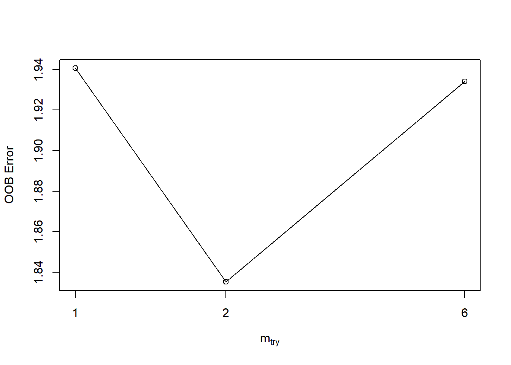

Random Forest Regression
Elena cox, Katarena Matos Meira, Mahipal Reddy Ramireddy
Download the code here: rfregression.R
Download the data here: ET_data.csv
Random Forest regression is done as follows
- split the data set into train and test.
- create Random Forest object
- plot oob error rate
- tune Random Forests finding optimal mtry.
- do cross validation on complete dataset.
- plot variable importance.
## randomForest 4.7-1.1## Type rfNews() to see new features/changes/bug fixes.## Warning: package 'rfUtilities' was built under R version 4.3.2my_data = read.csv("ET_data.csv")
my_data = na.omit(my_data)
# Initialize empty training and test sets
train_set <- data.frame()
test_set <- data.frame()
# Specify the number of rows to include in each set alternately
rows_per_set <- 3
# Create alternating sets
for (i in seq(1, nrow(my_data), by = rows_per_set * 2)) {
test_indices <- i:(i + rows_per_set - 1)
train_indices <- (i + rows_per_set):(i + rows_per_set * 2 - 1)
test_set <- rbind(test_set, my_data[test_indices, , drop = FALSE])
train_set <- rbind(train_set, my_data[train_indices, , drop = FALSE])
}train_set <- na.omit(train_set)
set.seed(123)
rf <- randomForest(data = train_set ,x = train_set[,c(1,3:8)],y = train_set$ET,ntree = 600,mtry = 2,importance = TRUE,proximity = TRUE)
print(rf)##
## Call:
## randomForest(x = train_set[, c(1, 3:8)], y = train_set$ET, ntree = 600, mtry = 2, importance = TRUE, proximity = TRUE, data = train_set)
## Type of random forest: regression
## Number of trees: 600
## No. of variables tried at each split: 2
##
## Mean of squared residuals: 1.849529
## % Var explained: 78.8Tuning RF
set.seed(123)
tuneRF(y = train_set$ET,x = train_set[,c(1,3:8)],,mtryStart = 2,stepFactor = 3,trace = TRUE,plot = TRUE, ntreeTry = 600 )## mtry = 2 OOB error = 1.835301
## Searching left ...
## mtry = 1 OOB error = 1.940607
## -0.0573783 0.05
## Searching right ...
## mtry = 6 OOB error = 1.934177
## -0.05387467 0.05
## mtry OOBError
## 1 1 1.940607
## 2 2 1.835301
## 6 6 1.934177Cross validation
- We trained the model with only train dataset.
- we are using the complete data set to do cross validation.
cv <- rf.crossValidation(x= rf, xdata = my_data[,c(1,3:8)],ydata = my_data$ET,p = 0.2, n = 99, seed = 123)## running: regression cross-validation with 99 iterationsfit.var.exp: Percent variance explained from the specified fit model. This metric typically represents the proportion of variance in the dependent variable that is explained by the model.
$ \text{Percent Variance Explained} = 100 \times \left(1 - \frac{\text{Residual Sum of Squares}}{\text{Total Sum of Squares}}\right) $
## [1] 78.8fit.mse: Mean Squared Error from the specified fit model. MSE is a measure of the average squared differences between observed and predicted values. It is commonly used as a measure of the model's accuracy.
$\text{Mean Squared Error (MSE)} = \frac{1}{n} \sum_{i=1}^{n} (y_i - \hat{y}_i)^2 $
## [1] 1.862548y.rmse: Root Mean Squared Error (observed vs. predicted) from each Bootstrap iteration (cross-validation). RMSE is similar to MSE but provides a measure in the original units of the response variable.
\(\text{Root Mean Squared Error (RMSE)} = \sqrt{\frac{1}{n} \sum_{i=1}^{n} (y_i - \hat{y}_i)^2}\)
## [1] 1.273641y.mbe: Mean Bias Error from each Bootstrapped model. Bias is the difference between the average prediction and the true value.
\(\text{Mean Bias Error (MBE)} = \frac{1}{n} \sum_{i=1}^{n} (y_i - \hat{y}_i)\)
## [1] 0.01062168y.mae: Mean Absolute Error from each Bootstrapped model. MAE is the average of the absolute differences between observed and predicted values. It is less sensitive to outliers than MSE.
\(\text{Mean Absolute Error (MAE)} = \frac{1}{n} \sum_{i=1}^{n} |y_i - \hat{y}_i|\)
## [1] 0.8425645The Kolmogorov-Smirnov (KS) test statistic (\(D\)) is a measure of the maximum absolute difference between the cumulative distribution functions (CDFs) of two datasets. The KS test is often used to assess whether a sample comes from a particular distribution or to compare two samples. Here's how to interpret the (D) statistic:
Larger (\(D\)): A larger (\(D\)) value indicates a greater discrepancy between the two empirical cumulative distribution functions. This suggests that the two samples are less likely to come from the same underlying distribution.
Smaller (\(D\)): A smaller (\(D\)) value indicates a smaller discrepancy between the two CDFs, suggesting that the samples are more similar in terms of their distribution.
## [1] 0.1249158p.val: The p-value represents the probability of observing a (\(D\)) value as extreme as the one computed, assuming that the two samples are drawn from the same distribution.Small p-value: Indicates evidence to reject the null hypothesis that the two samples come from the same distribution.
Large p-value: Suggests that there is insufficient evidence to reject the null hypothesis.
- Null Hypothesis: The null hypothesis of the KS test is that the two samples come from the same distribution.
## [1] 0.3423244Exercise
# Start of exercise ------------------------
library(randomForest)
library(rfUtilities)
my_data = read.csv("ET_data.csv") # replace with your specific filepath if needed
my_data = na.omit(my_data)
# Initialize empty training and test sets
train_set <- data.frame()
test_set <- data.frame()
# Specify the number of rows to include in each set alternately
rows_per_set <- 3
# Create alternating sets
for (i in seq(1, nrow(my_data), by = rows_per_set * 2)) {
test_indices <- i:(i + rows_per_set - 1)
train_indices <- (i + rows_per_set):(i + rows_per_set * 2 - 1)
test_set <- rbind(test_set, my_data[test_indices, , drop = FALSE])
train_set <- rbind(train_set, my_data[train_indices, , drop = FALSE])
}
train_set <- na.omit(train_set)
set.seed(123)
rf <- randomForest(data = train_set ,x = train_set[,c(1,3:8)],y = train_set$ET,ntree = 600,mtry = 2,importance = TRUE,proximity = TRUE)
print(rf)##
## Call:
## randomForest(x = train_set[, c(1, 3:8)], y = train_set$ET, ntree = 600, mtry = 2, importance = TRUE, proximity = TRUE, data = train_set)
## Type of random forest: regression
## Number of trees: 600
## No. of variables tried at each split: 2
##
## Mean of squared residuals: 1.849529
## % Var explained: 78.8# Tuning RF
set.seed(123)
tuneRF(y = train_set$ET,x = train_set[,c(1,3:8)],,mtryStart = 2,stepFactor = 3,trace = TRUE,plot = TRUE, ntreeTry = 600 )## mtry = 2 OOB error = 1.835301
## Searching left ...
## mtry = 1 OOB error = 1.940607
## -0.0573783 0.05
## Searching right ...
## mtry = 6 OOB error = 1.934177
## -0.05387467 0.05## mtry OOBError
## 1 1 1.940607
## 2 2 1.835301
## 6 6 1.934177# Cross validation
#- We trained the model with only train dataset.
#- we are using the complete data set to do cross validation.
cv <- rf.crossValidation(x= rf, xdata = train_set[,c(1,3:8)],ydata = train_set$ET,p = 0.2, n = 99, seed = 123)## running: regression cross-validation with 99 iterations## [1] 78.8## [1] 1.862548## [1] 1.375269## [1] 0.02598397## [1] 0.9622028## [1] 0.1744108## [1] 0.3528096